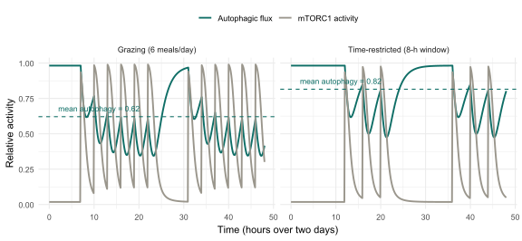

The previous chapter asked what feeds the decay of telomeres, the tipping of cells into senescence and the slow fire of inflammation. The answer lies inward, in the cell’s economy: how it reads the availability of food, how it keeps its proteins correctly folded, and how it recycles its own worn parts. This chapter sets out that machinery — the nutrient-sensing network, the proteostasis system and autophagy — and shows that it is not merely where ageing is suffered but where the oldest and most reproducible of all interventions does its work, which is why it is the hinge between the mechanisms of Part I–II and the therapies of Part III.
Almost everything that reliably slows ageing in a laboratory animal — eating less, eating less often, the drug rapamycin, perhaps metformin — converges on a single network that tells the cell whether to grow or to maintain itself. Understanding that switch, and the housekeeping it governs, is the prerequisite for understanding every dietary and pharmacological strategy that follows.
The hallmarks of this chapter belong to different tiers of the framework — deregulated nutrient-sensing and mitochondrial dysfunction are antagonistic, loss of proteostasis is primary, and disabled macroautophagy was added as a hallmark only in 2023 — but they form one functional system (López-Otín et al., 2023). Nutrient-sensing decides between building and maintaining; autophagy and proteostasis are how the cell maintains; and the whole is powered by mitochondria and the metabolic cofactors that link energy to information. The recurring lesson of Chapter 4 returns here in its sharpest form: the very signalling that builds a young body is, prolonged into later life, among the things that age it.
5.1 The nutrient-sensing network
Cells must constantly decide whether conditions favour growth or call for thrift, and they make that decision through a small, deeply conserved network of nutrient sensors (López-Otín et al., 2016). Four arms dominate it. The insulin and IGF-1 signalling (IIS) pathway reports the presence of glucose and growth signals. mTORC1 — the target of rapamycin — integrates amino-acid abundance and cellular energy to drive protein synthesis, ribosome and mitochondrial biogenesis, and to switch off autophagy. Opposing them, AMPK is tripped by a falling energy charge (a rising AMP-to-ATP ratio) and the sirtuins respond to the metabolic cofactor NAD⁺; both are activated by scarcity and both push the cell towards catabolism, stress defence and repair. The network’s logic is therefore an axis: nutrients and growth signals tilt it towards anabolism through IIS and mTORC1; scarcity tilts it towards maintenance through AMPK and the sirtuins (López-Otín et al., 2016).
The longevity evidence is among the most robust in the whole field, and it points in a consistent direction: less anabolic signalling means longer life. Genetically reducing IIS or mTOR activity extends lifespan from yeast to nematodes to mice; activating AMPK or the sirtuins does likewise (Kennedy et al., 2014; López-Otín et al., 2016). The pattern reaches into our own species — variants in the FOXO3 transcription factor, a downstream effector of reduced IIS, are among the most reproducible genetic associations with human longevity, recurring in centenarian studies from Hawaii to Germany to China (Willcox et al., 2008). And the most recent work has begun to set these pathways within an integrated, multi-level and increasingly reversible picture of ageing, rather than a static catalogue of decline: a 2026 cross-species transcriptomic atlas resolved ageing into distinct molecular modules and found that lifespan-extending manoeuvres such as caloric restriction and rapamycin imprint a detectable — and partly reversible — signature on the metabolic module itself (Tyshkovskiy et al., 2026).
NoteKey concept — deregulated nutrient-sensing as antagonistic pleiotropy
Why would evolution build a network whose activity shortens life? Because in youth it does the opposite. Vigorous anabolic signalling through IIS and mTORC1 is exactly what builds a body — growth, maturation, reproduction — and selection acts overwhelmingly on those early decades. The same signalling sustained into later life, when it is no longer building anything, becomes pro-ageing: it suppresses the maintenance programmes the old cell needs and feeds the inflammation and senescence of Chapter 4. This is Williams’s antagonistic pleiotropy from Chapter 1, made molecular (Williams, 1957). It also frames the therapeutic problem precisely: the goal is not to abolish these pathways, which would cripple a young body, but to turn them down in the second half of life.
ImportantAnalogy — the accelerator and the brake
Picture the network as a car with mTORC1 as the accelerator and AMPK as the brake, and food as the foot on the pedals. A meal presses the accelerator: build, divide, store. Fasting lifts off and presses the brake: coast, conserve, repair the engine. A young car spends much of its time accelerating, and should. The trouble of modern ageing is a foot that rarely leaves the accelerator — a constant supply of food keeping mTORC1 high and the maintenance systems idling — so the engine is never serviced. Dietary restriction, and the drugs that mimic it, are ways of easing off the accelerator or tapping the brake; the rest of this chapter is about what the servicing actually consists of.
Table 5.1 sets out the four arms and the pharmacological handles that act on each — handles whose clinical evaluation is the subject of Chapter 6. Two deserve mention now because they anchor the evidence. Rapamycin, an mTOR inhibitor, extends the lifespan of genetically heterogeneous mice even when begun late in life, the first drug shown to do so in a mammal (Harrison et al., 2009); metformin, which activates AMPK among other actions, attenuates several hallmarks at once and is the first drug to enter a dedicated human ageing trial (Kulkarni et al., 2020). They are the proof that the network is not merely descriptive but druggable(Partridge et al., 2020). The translation to humans is recent and sobering: the first randomised, placebo-controlled trial of intermittent rapamycin in healthy older adults found it broadly safe across a year, with modest gains in lean mass and well-being but nothing resembling wholesale rejuvenation — an honest early measure of the distance between a mouse result and a human one (Moel et al., 2025).
Table 5.1: The four arms of the nutrient-sensing network. Anabolic arms (IIS, mTORC1) and catabolic arms (AMPK, sirtuins) form an axis; longevity interventions consistently push it towards the catabolic, maintenance side.
Pathway
Principal cue sensed
Longevity-promoting direction
Pharmacological handle
Insulin/IGF-1 signalling (IIS)
Glucose, growth signals
Reduced signalling
(largely genetic; dietary)
mTORC1
Amino acids, energy
Inhibition
Rapamycin (→ Ch. 6)
AMPK
Low energy (high AMP:ATP)
Activation
Metformin (→ Ch. 6)
Sirtuins (SIRT1–7)
NAD⁺ availability
Activation
NAD⁺ precursors (→ Ch. 6)
The cell-level picture has a tissue-level counterpart: ageing adipose progressively loses metabolic flexibility and becomes an active driver of systemic metabolic decline, amplifying the deregulation at every downstream level (Lin et al., 2026; Wang et al., 2025).
5.2 NAD⁺, sirtuins and the mitochondrial connection
One arm of that network doubles as a window onto the cell’s power supply. The sirtuins act only when supplied with NAD⁺ (nicotinamide adenine dinucleotide), a cofactor that is both a carrier of electrons in energy metabolism and a substrate consumed by the sirtuins, by the DNA-repair enzymes known as PARPs, and by the enzyme CD38 (Covarrubias et al., 2021). Because NAD⁺ sits at this crossroads, its level is a readout of metabolic state — and, with age, that level falls. A decline in tissue NAD⁺ with age is well documented in rodents — though, as recent appraisals stress, the human evidence is thinner and less consistent than the rodent data are sometimes taken to imply (Migaud et al., 2024) — and because the sirtuins depend on it, any such decline propagates into weaker DNA repair, drifting chromatin, more readily triggered senescence and faltering mitochondrial quality control (Covarrubias et al., 2021). Tellingly, the most recent work has shifted from cataloguing this decline to asking whether reversing it restores function: in animal models several NAD⁺-dependent deficits can be not merely slowed but reversed by restoring the cofactor (Covarrubias et al., 2021) — a non-trivial change of ambition, even where the human translation still lags.
That last consequence connects this chapter to the hallmark of mitochondrial dysfunction. Mitochondria are not merely the cell’s power stations; through the sirtuins and the regulator PGC-1α they are wired into the nutrient-sensing network, and their decline with age — reduced respiratory efficiency, accumulation of damaged organelles, a slackening of the mitophagy that culls them — both reflects and worsens the metabolic shift (López-Otín et al., 2016). Like senescence, mitochondrial signalling is double-edged: a modest, transient rise in mitochondrial stress can be protective, a phenomenon termed mitohormesis, which is one reason blunt “antioxidant” strategies have so often disappointed. Expanding this picture, recent work identifies peroxisomes as active orchestrators of metabolic flexibility and longevity through inter-organelle signalling cascades, adding a layer to the metabolic network of ageing that the sirtuin–mitochondria axis alone does not capture (Sharma et al., 2026).
The therapeutic temptation is obvious: if NAD⁺ falls, restore it. Precursors such as nicotinamide riboside (NR) and nicotinamide mononucleotide (NMN)1 raise NAD⁺ in tissues and improve healthspan measures in mice, and the mitophagy-inducing compound urolithin A has improved muscle endurance in human trials (Migaud et al., 2024). In people, however, the picture is more equivocal than the preclinical enthusiasm implies, and turning a raised NAD⁺ marker into a clinical benefit remains the central unsolved problem (Vinten et al., 2025). But this is precisely the kind of claim this work examines with some scepticism.
CautionCaveat — the NAD⁺ gap between mouse and marketing
NAD⁺ precursors are sold as supplements on a wave of genuine but largely preclinical science. The animal data are real; the human data are thin. A careful appraisal of what is actually established about nicotinamide riboside in people concludes that, while supplementation reliably raises NAD⁺ markers in blood, robust clinical benefits on the outcomes that matter — function, disease, lifespan — remain to be demonstrated (Damgaard & Treebak, 2023; Vinten et al., 2025). The lesson generalises, and the book returns to it in Section 11.1: that a molecule declines with age, and that restoring it helps a mouse, is a hypothesis about humans, not a result in them. A raised biomarker is not a longer life.
5.3 Proteostasis and its collapse
If nutrient-sensing decides whether to maintain, proteostasis is much of what maintenance means. A cell’s proteins are continually synthesised, folded, put to work, damaged and replaced, and keeping that population correctly folded and the damaged fraction cleared is the task of the proteostasis network: the molecular chaperones that fold and refold, the heat-shock response that scales chaperone production to demand, and the two great degradation systems — the ubiquitin–proteasome system for tagged individual proteins and the autophagy–lysosome system for bulk material and aggregates. This network declines with age, and that decline is now among the better-mapped of all the cellular changes of ageing (Hipp et al., 2019).
When it fails, the consequences are structural. Misfolded and damaged proteins accumulate and aggregate, and the clinical face of that collapse is the great age-related proteinopathies: the amyloid and tau of Alzheimer’s disease, the α-synuclein of Parkinson’s, and others in which a specific protein, no longer cleared, forms toxic aggregates in a vulnerable tissue. What the most recent work adds is resolution and, with it, a change of ambition. Single-cell mapping shows the decline of one selective clearance route — chaperone-mediated autophagy, which picks out individual proteins for lysosomal destruction — proceeding tissue by tissue and even differently between the sexes, yet remaining inducible by exercise and fasting well into old age (Santiago-Fernández et al., 2025); and in aged and Alzheimer’s-model mice, switching that route back on, pharmacologically or genetically, restores the synaptic proteome and normalises neuronal function (Khawaja et al., 2025). Proteostasis decline is thus increasingly framed not as a fixed endpoint but as a target — a mechanism through which the cellular hallmarks become the diseases of old age, and one that can, at least in animals, be partly reversed.
TipIn depth — the three arms of the proteostasis network
The network has a logic worth keeping in view. Folding is handled by molecular chaperones (prominently the heat-shock proteins), which help nascent and stressed proteins reach their correct shape and are themselves regulated by the master transcription factor HSF-1; the capacity to induce this heat-shock response wanes with age. Tagged degradation runs through the ubiquitin–proteasome system, which marks individual proteins with ubiquitin for destruction in the proteasome. Bulk degradation runs through autophagy, which delivers proteins, aggregates and whole organelles to the lysosome — and which is the subject of the next section. When folding fails, degradation is the backstop; when degradation is overwhelmed, aggregates form. Ageing erodes all three arms at once, which is why proteostasis collapse is progressive and self-reinforcing rather than a single broken step (Hipp et al., 2019). You need not hold the components in mind so much as the shape of the system: make correctly, or clear what is made wrongly, and do both less well with age.
5.4 Autophagy: the cell’s renewal
The third arm of the proteostasis network is important enough, and central enough to ageing, to take separately. Autophagy — literally “self-eating” — is the process by which a cell encloses its own worn or surplus components and delivers them to the lysosome for breakdown and recycling. Its principal form, macroautophagy, engulfs bulk cytoplasm and organelles; specialised forms include mitophagy, which culls damaged mitochondria, and chaperone-mediated autophagy, which selects individual proteins. Together they make autophagy the cell’s renewal system: not merely waste disposal but the controlled demolition that clears space for the new (Aman et al., 2021).
Autophagy is also where this chapter’s threads meet, because it is governed by the nutrient-sensing network of the first section. mTORC1 suppresses autophagy when nutrients are plentiful; AMPK and the sirtuins induce it when they are scarce. Feeding, in other words, switches renewal off, and fasting switches it on — which is the mechanistic heart of why eating less, and less often, is good for cells. With age, autophagic capacity declines, a failure judged important enough that disabled macroautophagy was named a distinct hallmark in 2023 (López-Otín et al., 2023), and its decline feeds the others: aggregates go uncleared, damaged mitochondria persist, and cells slide more readily into senescence.
Figure 5.1 develops the feeding–fasting logic in a simple simulation, contrasting a day of constant grazing with one of time-restricted eating, and showing why the timing of food, not only its quantity, governs how much renewal a cell achieves.
Show the simulation code
library(ggplot2)dt<-0.1; t<-seq(0, 48, by =dt)tau<-2.0# nutrient-signal decay (h)tauA<-1.6# autophagy response lag (h)nutrient<-function(t, meals){N<-numeric(length(t))for(minmeals){i<-t>=m; N[i]<-N[i]+exp(-(t[i]-m)/tau)}N}mtor<-function(N)1/(1+exp(-(N-0.6)/0.15))autophagy<-function(mt){A<-numeric(length(mt)); A[1]<-1-mt[1]for(iin2:length(mt))A[i]<-A[i-1]+(1-mt[i-1]-A[i-1])*dt/tauApmax(0, pmin(1, A))}build<-function(meals, label){mt<-mtor(nutrient(t, meals)); A<-autophagy(mt)rbind(data.frame(t =t, value =mt, signal ="mTORC1 activity", schedule =label),data.frame(t =t, value =A, signal ="Autophagic flux", schedule =label))}graze<-as.vector(outer(c(7, 10, 13, 16, 19, 22), c(0, 24), "+"))tre<-as.vector(outer(c(12, 16, 20), c(0, 24), "+"))df<-rbind(build(graze, "Grazing (6 meals/day)"),build(tre, "Time-restricted (8-h window)"))means<-aggregate(value~schedule, data =subset(df, signal=="Autophagic flux"), FUN =mean)ggplot(df, aes(t, value, colour =signal))+geom_line(linewidth =0.9)+geom_hline(data =means, aes(yintercept =value), colour ="#0F6E66", linetype ="dashed", linewidth =0.5)+geom_text(data =means, aes(x =2, y =value+0.06, label =paste0("mean autophagy = ", round(value, 2))), colour ="#0F6E66", hjust =0, size =3, inherit.aes =FALSE)+scale_colour_manual(values =c("Autophagic flux"="#0F6E66", "mTORC1 activity"="#9A968C"))+facet_wrap(~schedule)+labs(x ="Time (hours over two days)", y ="Relative activity", colour =NULL)+theme_minimal(base_size =11)+theme(legend.position ="top")

Figure 5.1: Autophagy follows the feeding clock, simulated. Each meal raises a nutrient signal that activates mTORC1 (grey), which suppresses autophagic flux (teal); between and after meals, as the signal decays, autophagy is released and rises with a lag. Under constant grazing (six meals across the waking day, left) mTORC1 rarely falls far enough for long enough, so autophagy stays low. Under time-restricted eating (the same food within an eight-hour window, right) the long daily fast lets autophagy climb and stay high, raising its time-averaged level (dashed line). The lesson is that when one eats, not only how much, sets how much cellular renewal occurs — the mechanistic rationale for the dietary strategies of Chapter 6.
This is why the pharmacology of the previous sections matters. The clearest autophagy inducers are the very agents that mimic fasting: rapamycin (by inhibiting mTORC1), metformin (by activating AMPK), the NAD⁺ precursors (through the sirtuins), and the dietary polyamine spermidine, which reproduces several effects of caloric restriction largely by enhancing autophagy (Madeo et al., 2018; Vinten et al., 2025). Indeed the case has been made that inducing autophagy could decelerate the biological clocks themselves, slowing ageing across many of its hallmarks at once (Kroemer et al., 2025).
ImportantAnalogy — the night shift
Think of autophagy as a building’s renovation crew that can only work when the offices empty out. During the working day — when the cell is fed and mTORC1 is high — the corridors are too busy; the crew waits. Only in the quiet of the night, when AMPK and the sirtuins take over, do they move in to clear the broken furniture, replace failing wiring (damaged mitochondria) and haul away the rubbish (protein aggregates) before the next day begins. A cell that is fed around the clock is an office that never closes: the work of the day gets done, but the renovation never happens, and the building slowly degrades. Fasting is simply the act of sending everyone home so the crew can work.
A final caution keeps this chapter honest. The promise of these pathways is real, but so is their double edge. mTOR is not only an accelerator of ageing but the engine of necessary growth, so its inhibition can impair wound healing and immune responses and disturb glucose handling; more autophagy is not invariably better. And the strength of the evidence varies sharply between agents: a recent meta-analysis across vertebrates found that rapamycin, like dietary restriction itself, reliably extends lifespan, whereas metformin — for all its mechanistic appeal — does not do so consistently in healthy animals (Ivimey-Cook et al., 2025). The network is a genuine set of levers on ageing; which levers actually lengthen a healthy life, and at what cost, is the question the therapeutic chapters must now confront.
We have reached the cell’s economy and found a single, conserved network at its centre — sensing food, choosing between growth and maintenance, and governing through autophagy and proteostasis the upkeep on which every other hallmark depends. We have seen that the surest laboratory interventions against ageing all converge on this network, that NAD⁺ links it to the failing mitochondria, and that its promise is everywhere shadowed by antagonistic trade-offs and by the gap between mouse and human evidence.
That convergence is also a doorway. If a small set of nutrient sensors decides how fast cells age, then the most direct way to act on ageing is to act on what those sensors detect — food itself. Dietary restriction, fasting and the drugs designed to imitate them are the oldest, cheapest and most reproducible interventions in the entire field, and they open Part III. We turn from the machinery to the manipulation: from how the cell reads nutrients to what happens when we deliberately change the reading.
Aman, Y., Schmauck-Medina, T., Hansen, M., et al. (2021). Autophagy in healthy aging and disease. Nature Aging, 1(8), 634–650. https://doi.org/10.1038/s43587-021-00098-4
Covarrubias, A. J., Perrone, R., Grozio, A., & Verdin, E. (2021). NAD+ metabolism and its roles in cellular processes during ageing. Nature Reviews Molecular Cell Biology, 22(2), 119–141. https://doi.org/10.1038/s41580-020-00313-x
Damgaard, M. V., & Treebak, J. T. (2023). What is really known about the effects of nicotinamide riboside supplementation in humans. Science Advances, 9(29), eadi4862. https://doi.org/10.1126/sciadv.adi4862
Harrison, D. E., Strong, R., Sharp, Z. D., Nelson, J. F., Astle, C. M., Flurkey, K., Nadon, N. L., Wilkinson, J. E., Frenkel, K., Carter, C. S., Pahor, M., Javors, M. A., Fernandez, E., & Miller, R. A. (2009). Rapamycin fed late in life extends lifespan in genetically heterogeneous mice. Nature, 460(7253), 392–395. https://doi.org/10.1038/nature08221
Hipp, M. S., Kasturi, P., & Hartl, F. U. (2019). The proteostasis network and its decline in ageing. Nature Reviews Molecular Cell Biology, 20(7), 421–435. https://doi.org/10.1038/s41580-019-0101-y
Ivimey-Cook, E. R., Sultanova, Z., et al. (2025). Rapamycin, not metformin, mirrors dietary restriction-driven lifespan extension in vertebrates: A meta-analysis. Aging Cell, 24, e70131. https://doi.org/10.1111/acel.70131
Kennedy, B. K., Berger, S. L., Brunet, A., Campisi, J., Cuervo, A. M., Epel, E. S., & Sierra, F. (2014). Geroscience: Linking aging to chronic disease. Cell, 159(4), 709–713. https://doi.org/10.1016/j.cell.2014.10.039
Khawaja, R. R. et al. (2025). Chaperone-mediated autophagy regulates neuronal activity by sex-specific remodelling of the synaptic proteome. Nature Cell Biology, 27(10), 1688–1707.
Kroemer, G., Maier, A. B., Cuervo, A. M., Gladyshev, V. N., Ferrucci, L., Gorbunova, V., Kennedy, B. K., Rando, T. A., Seluanov, A., Sierra, F., Verdin, E., & López-Otín, C. (2025). From geroscience to precision geromedicine: Understanding and managing aging. Cell, 188(8), 2043–2062. https://doi.org/10.1016/j.cell.2025.03.011
Kulkarni, A. S., Gubbi, S., & Barzilai, N. (2020). Benefits of metformin in attenuating the hallmarks of aging. Cell Metabolism, 32(1), 15–30. https://doi.org/10.1016/j.cmet.2020.04.001
Lin, H., Li, H., & Tang, Q. (2026). From fat to fate: How aging adipose tissue drives systemic metabolic aging. Biogerontology, 27(1), 30. https://doi.org/10.1007/s10522-025-10376-y
López-Otín, C., Blasco, M. A., Partridge, L., Serrano, M., & Kroemer, G. (2023). Hallmarks of aging: An expanding universe. Cell, 186(2), 243–278. https://doi.org/10.1016/j.cell.2022.11.001
López-Otín, C., Galluzzi, L., Freije, J. M. P., Madeo, F., & Kroemer, G. (2016). Metabolic control of longevity. Cell, 166(4), 802–821. https://doi.org/10.1016/j.cell.2016.07.031
Madeo, F., Eisenberg, T., Pietrocola, F., & Kroemer, G. (2018). Spermidine in health and disease. Science, 359(6374), eaan2788. https://doi.org/10.1126/science.aan2788
Migaud, M. E., Ziegler, M., & Baur, J. A. (2024). Regulation of and challenges in targeting NAD+ metabolism. Nature Reviews Molecular Cell Biology, 25(10), 822–840. https://doi.org/10.1038/s41580-024-00752-w
Moel, M., Harinath, G., Lee, V., Nyquist, A., Morgan, S. L., Isman, A., & Zalzala, S. (2025). Influence of rapamycin on safety and healthspan metrics after one year: PEARL trial results. Aging, 17. https://doi.org/10.18632/aging.206235
Partridge, L., Fuentealba, M., & Kennedy, B. K. (2020). The quest to slow ageing through drug discovery. Nature Reviews Drug Discovery, 19(8), 513–532. https://doi.org/10.1038/s41573-020-0067-7
Santiago-Fernández, O., Coletto, L., Tasset, I., et al. (2025). Age-related decline of chaperone-mediated autophagy in skeletal muscle leads to progressive myopathy. Nature Metabolism, 7(12), 2589–2611. https://doi.org/10.1038/s42255-025-01412-9
Sharma, A. et al. (2026). Peroxisomes orchestrate metabolic flexibility and longevity via an interorganelle cascade. Nature Aging, 6(5), 987–1006. https://doi.org/10.1038/s43587-026-01122-1
Tyshkovskiy, A., Kholdina, D., Davitadze, M., Molière, A., Moldakozhayev, A., Tongu, Y., Kasahara, T., Glubokov, D., Eames, A., Kats, L. M., Vladimirova, A., Ying, K., Liu, H., Zhang, B., Khasanova, U., Moqri, M., Van Raamsdonk, J. M., Harrison, D. E., Strong, R., … Gladyshev, V. N. (2026). Universal transcriptomic hallmarks of mammalian ageing and mortality. Nature. https://doi.org/10.1038/s41586-026-10542-3
Vinten, K. T. et al. (2025). NAD+ precursor supplementation in human ageing: Clinical evidence and challenges. Nature Metabolism, 7(10), 1974–1990. https://doi.org/10.1038/s42255-025-01387-7
Wang, G. et al. (2025). Adipose tissue ageing: Implications for metabolic health and lifespan. Nature Reviews Endocrinology, 21(10), 623–637. https://doi.org/10.1038/s41574-025-01142-8
Willcox, B. J., Donlon, T. A., He, Q., Chen, R., Grove, J. S., Yano, K., Masaki, K. H., Willcox, D. C., Rodriguez, B., & Curb, J. D. (2008). FOXO3A genotype is strongly associated with human longevity. Proceedings of the National Academy of Sciences, 105(37), 13987–13992. https://doi.org/10.1073/pnas.0801030105
Williams, G. C. (1957). Pleiotropy, natural selection, and the evolution of senescence. Evolution, 11(4), 398–411. https://doi.org/10.2307/2406060
NR is sold principally as Tru Niagen (ChromaDex) and NMN under numerous competing brands; both reliably raise circulating NAD⁺ metabolites in humans but have not demonstrated robust clinical benefit on functional or disease endpoints in adequately powered trials (Damgaard & Treebak, 2023; Vinten et al., 2025). The regulatory status of NMN is additionally contested: in 2022 the US Food and Drug Administration ruled that NMN cannot be classified as a dietary supplement because it was first authorised as an investigational drug — a question not fully resolved as of 2025 (https://www.fda.gov/food/cfsan-constituent-updates/fda-responds-citizen-petition-regarding-nmn). Advertising claims for NAD⁺ precursor products have also been challenged by self-regulatory bodies (the US National Advertising Division) for insufficient substantiation.↩︎